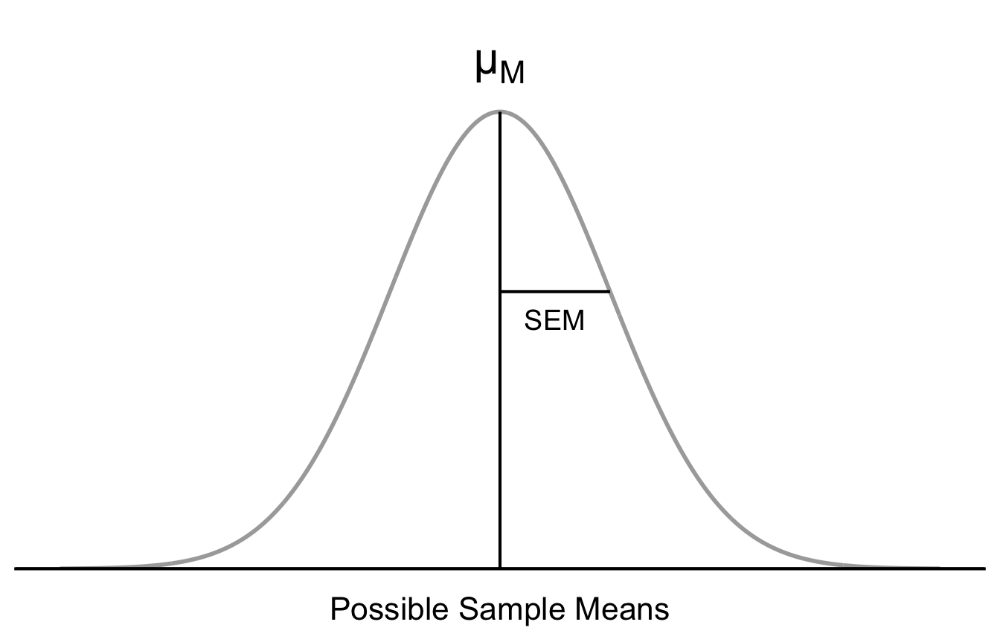
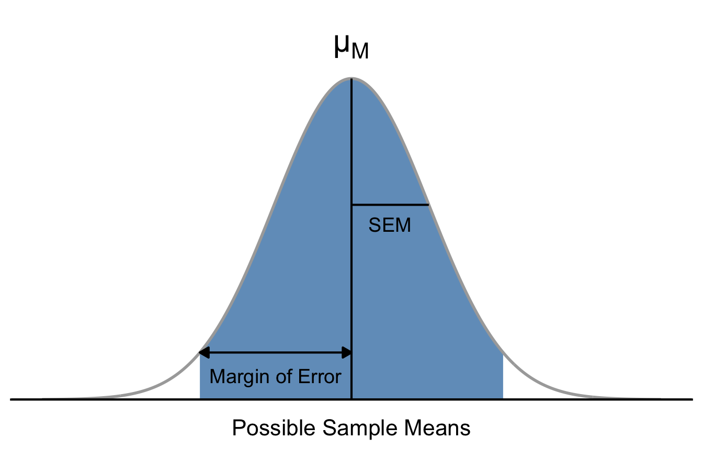
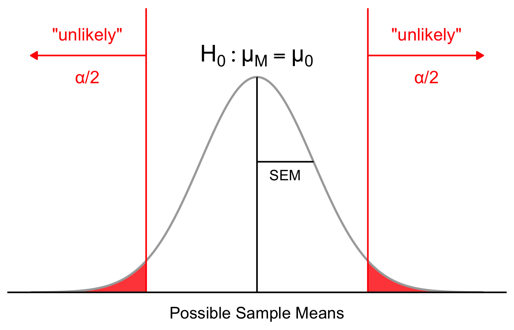
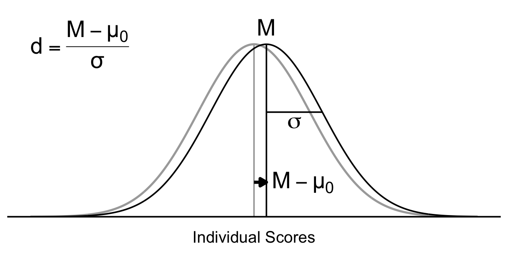
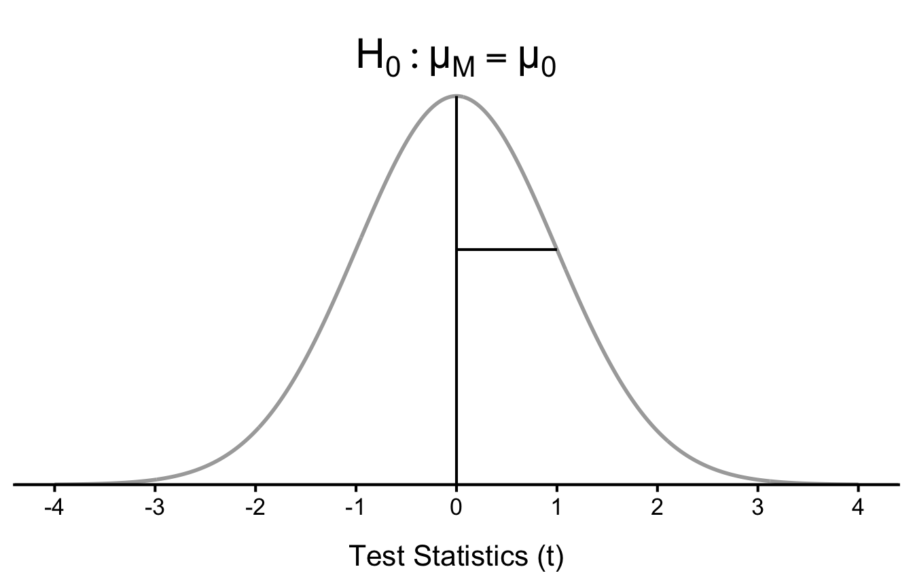
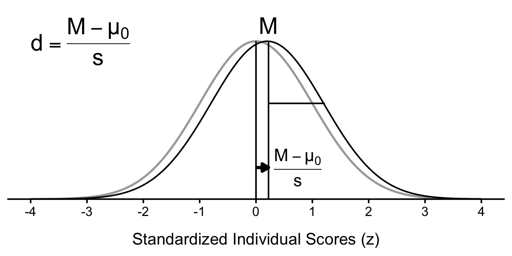

Ch.7: One Sample z-test and t-test
Now that you have mastered the basic process of hypothesis testing, you are ready for this: your first real statistical test. The first question we can answer with hypothesis testing is whether a sample mean is significantly different from a baseline value. To answer this question, we can use either a one-sample z-test or a one-sample t-test.
Both one-sample z-tests and one-sample t-tests are used to determine whether a sample mean is significantly different from a baseline value. When do we use which? In a one-sample z-test, that baseline is some known population mean, and we also know the spread of the scores in the population (i.e., population standard deviation). In a one-sample t-test, the baseline can be a known population mean or a hypothesized value, but the spread of the scores is unknown, so we estimate it from the sample.
The logic is the same from before. We see something interesting in our data – in this case, the mean difference from the baseline value – and we want to know if that difference is “real” (statistical significance) and big enough to care (practical significance). For statistical significance, we start with the null hypothesis that there is no difference in the population, and we calculate the probability of observing sample means as extreme as the one we observed or more extreme if the null hypothesis is true. If that probability is low enough (lower than our threshold of significance, alpha), the data is unlikely enough under the null hypothesis that we conclude that there is something interesting going on in the population. For practical significance, we consider how large the difference between someone with the sample and someone with the baseline value.
1 One-Sample z-Test
First, we need to formulate the research and null hypotheses. Remember, in such a hypothesis test, we are trying to compare two populations. Population 1, the research population, is the one from which we have drawn a research sample.

We do not have access to the actual research population mean, hence the need to calculate a sample mean. That sample mean is our best proxy for the population 1 mean, which we need to compare to the mean of population 2. The nature of the comparison, in particular its directionality, is determined by the researcher’s prediction.
Next, we need to determine what sample means we can expect if the null hypothesis is true. This distribution of sample means under the null hypothesis is shown in Figure 2. If the population mean is the same in both populations, then the sampling distribution of sample means will be centered on the population 2’s mean. The spread of the sampling distribution is determined by the standard error of the mean (SEM), which is the population standard deviation divided by the square root of the sample size.
1.1 Margin of Error and Confidence Intervals
Our point estimate for the population mean is the sample mean, but Figure 2 shows that there is some uncertainty in what sample means we may observe when we only get to observe a subset of the true population, due to sampling error. As we’ve seen before, how far a sample mean can fall from the population mean with some confidence level is called the margin of error Figure 3. Confidence intervals communicate uncertainty with some degree of confidence by extending sample mean by the margin of error equally in both directions.
\[\text{Confidence Interval} = \text{Sample Mean} \pm \text{Margin of Error}\]

1.2 Null Hypothesis and Alternative Hypothesis
The hypothesis that an apparent effect is due to chance is called the null hypothesis, written \(H_0\) (“H-naught”). The null hypothesis (H0) states that there is no significant difference between the sample mean and the baseline value. Subscript 0 will mark the parameters associated with the null hypothesis, so \(\mu_{0}\) indicates the population mean under the null hypothesis.
\[H_0 \colon \mu_{M} = \mu_{0}\]
The alternative hypothesis (\(H_1\)) needs to include all possibilities that are not included in the null hypothesis, because when the sample data is unlikely under the null hypothesis, we have to support the alternative hypothesis. The alternative hypothesis states that there is a significant difference between the sample mean and the baseline value.
1.2.1 Two-tailed Test
The simplest is the two-tailed test with non-directional hypothesis. It just states that the sample mean is not the same as the baseline value.
\[H_1 \colon \mu_{M} \neq \mu_{0}\]
What this is saying is that the difference can go either way – the sample mean can be either greater than or less than the baseline value. In this case, we need to distribute our Type I error rate \(\alpha\) equally across both tails (marked red in Figure 4). If the sample means are too low (outside of the cutoff valueson the left tail) or too high (on the right tail), then they are unlikely under the null hypothesis, and we reject the null hypothesis.

1.2.2 One-tailed Test
If the researcher has a directional hypothesis, and the population of interest can have only one directional difference from the baseline value, then a one-tailed test is appropriate. For example, if you are testing the mean height of 6-year-old children against the 5-year old baseline, it is reasonable to believe that, compared to the mean height of 5-year-olds, the mean height of 6-year-olds will be either the same (the null hypothesis) or greater (the alternative hypothesis). In this case, we can use a one-tailed test with a directional hypothesis.
\[H_1 \colon \mu_{M} > \mu_{0}\]
The Type I error rate is not split across two tails, but instead is concentrated in one tail (marked red in Figure 5). If the sample mean is too high (outside of the cutoff value on the right tail), then it is unlikely under the null hypothesis, and we reject the null hypothesis.
The same logic applies if the alternative hypothesis is that the sample mean is less than the baseline value, in which case the cutoff value is on the left tail.
\[H_1 \colon \mu_{M} < \mu_{0}\]


1.3 How Unlikely Are Sample Means as Extreme as the One Observed or More Extreme?
Now, we need to determine how unlikely the sample mean is under the null hypothesis: the p-value. We can find the probability in the tails of the sampling distribution using the z distribution. In Figure 6, the probability of observing a sample mean as extreme as the one observed or more extreme if the null hypothesis is true is represented by the shaded area in orange in both tails. If that probability is lower than our threshold of significance, we reject the null hypothesis and conclude that there is a significant difference between the sample mean and the baseline value.
![Sampling distribution of sample means. The population mean under the null hypothesis is marked by a black vertical line and labeled H naught μ subscript M equals μ subscript 0. The standard error of the mean SEM is marked by a black horizontal line extending from the center. The cutoff values for unlikely sample means under the null hypothesis are marked by red vertical lines and labeled with α/2. The observed sample mean M is marked by an arrow, and the area as extreme as M or more extreme is shaded in orange in both tails, representing the p-value.](07-one-sample-z-test-and-t-test_files/figure-html/fig-hypothesis-test-1.png)
1.3.1 z Distribution Under the Hood
How did we find the p value? We used what we know about the standard normal distribution. We can standardize the sampling distribution of sample means by subtracting the population mean and dividing by the standard error of the mean. This gives us a z distribution, which is a standard normal distribution with a mean of 0 and a standard deviation of 1. As noted before, the z distribution allows us to find probabilities for any sample mean under the null hypothesis.
Figure 7 shows the z distribution, which is the same as the sampling distribution of sample means, but standardized. The population mean under the null hypothesis is marked by a vertical line at 0, and the standard error of the mean is marked by a horizontal line extending from the center. Now, our unit is the standard error of the mean (i.e., z=1 is one standard error away from the population mean under the null hypothesis).
Figure 8 shows the same hypothesis test as Figure 6, but in terms of the z distribution. The observed sample mean is standardized to a test statistic z, which is the number of standard errors that the sample mean is away from the population mean under the null hypothesis. The p value is still the probability of observing a test statistic as extreme as z or more extreme if \(H_0\) is true.
![Standarized sampling distribution of sample means. The population mean under the null hypothesis is marked by a black vertical line at 0 and labeled H naught μ subscript M equals μ subscript 0. The standard error of the mean SEM is marked by a black horizontal line extending from the center and is 1. The cutoff values for unlikely sample means under the null hypothesis are marked by red vertical lines and labeled with α/2. The observed test statistic z is marked by an arrow, and the area as extreme as z or more extreme is shaded in orange in both tails, representing the p-value.](07-one-sample-z-test-and-t-test_files/figure-html/fig-hypothesis-test-z-1.png)
1.4 Statistical Significance Conclusion
Because the p-value is less than the significance level \(\alpha\) (i.e., the observed sample mean is unlikely enough under the null hypothesis), we reject the null hypothesis and conclude that there is a significant difference between the sample mean and the baseline value.
1.5 Big Enough Difference to Matter?
When we reject the null hypothesis, we are stating that the difference we found was statistically significant, but we have mentioned several times that this tells us nothing about practical significance. To get an idea of the actual size of what we found, we can compute a new statistic called an effect size. Effect size gives us an idea of how large, important, or meaningful a statistically significant effect is. For mean differences like we calculated here, our effect size is Cohen’s d:
\[d = \frac{M - \mu_{0}}{\sigma}\]
Essentially, we are comparing the difference between the sample mean and the population mean under the null hypothesis to the population standard deviation Figure 9.

Notice that this is very similar to our formula for z, but we no longer take into account the sample size (since overly large samples can make it too easy to reject the null). Cohen’s d is interpreted in units of standard deviations, just like z.
Cohen’s d is interpreted as small, moderate, or large. General guidelines suggest that d = 0.20 is small, d = 0.50 is moderate, and d = 0.80 is large Figure 10. Notice that as the effect size increases, the overlap between the individual scores under the null distribution (gray) and the population distribution (black) decreases. Obviously, values can fall in between these guidelines, so we should use our best judgment and the context of the problem to make our final interpretation of size.


Effect sizes are incredibly useful and provide important information and clarification that overcomes some of the weakness of hypothesis testing. Any time you perform a hypothesis test, whether statistically significant or not, you should always calculate and report effect size.
2 One-Sample t-Test
In reality, z-test is rarely used because we almost never know the population standard deviation. Instead, we use the sample standard deviation \(s\) to estimate the population standard deviation.
![One-sample t-test. Research population 1 with a mean of mu 1 is on the left, shown as a circle with a dashed line. From there, a solid arrow extends to the bottom to show that a sample with a mean of M and standard deviation of s subscript M is drawn from that population. Another arrow extends to the right from research population 1 to the comparison population 2 with a mean of mu 2, shown as a circle with a solid line. Under the arrow, three questions are shown: different from? less than? greater than? Now, there is another arrow extending from the sample standard deviation s subscript M to the right, labeled 'estimate', which extends to the comparison population 2's sigma subscript M.](https://pressbooks.bccampus.ca/statspsych/wp-content/uploads/sites/1469/2021/08/Fig-5.11-768x468.png)
so our standard error of the mean becomes:
\[SEM = \frac{s}{\sqrt{n}}\]
By doing this, however, we introduce more uncertainty into our estimate of the standard error of the mean. To account for this additional uncertainty, we use a different distribution called the t distribution to find probabilities for sample means under the null hypothesis.

The t distributions are a series of distributions, based on the normal distribution, that adjust their shape according to degrees of freedom. The degrees of freedom for one-sample t-test is \(n - 1\), where \(n\) is the sample size. As the sample size increases, the degrees of freedom increase, and the t distribution approaches the z distribution.
![The image shows the relationship between the Student's t-distribution and the standard normal (z) distribution. The key takeaway is that as the degrees of freedom ((df)) increase, the t-distribution becomes more similar to the standard normal distribution. The standard normal distribution (z) is represented by the solid red line. The t-distributions are represented by the dashed lines for different degrees of freedom: (df=2), (df=10), and (df=30). The t-distribution with the lowest degrees of freedom ((df=2)) has the flattest peak and the thickest tails, indicating more probability in the tails and less in the center compared to the z-distribution. As the degrees of freedom increase to (df=10) and then to (df=30), the t-distribution curves become taller and narrower, more closely approximating the shape of the standard normal distribution. The t-distribution with (df=30) is visually almost indistinguishable from the standard normal distribution.](https://umsystem.pressbooks.pub/app/uploads/sites/23/2021/12/MicrosoftTeams-image-19.png)
2.1 Margin of Error and Confidence Intervals
Because t distribution is now used to find probabilities for sample means under the null hypothesis, our “confidence” also maps to different margin of error values. Our sample size not only determines the SEM, but also the critical values for t, \(t^*\).
\[\text{Margin of Error} = t^* \times \frac{s}{\sqrt{n}}\]
Confidence intervals are then calculated in the same way, by extending the sample mean by the margin of error in both directions.
2.2 Two-Tailed Hypothesis Test Using Test Statistic (t)
The logic of significance testing is the same as before. We are just finding the probabilities using the test statistic \(t\) instead of \(z\). The test statistic \(t\) is calculated as:
\[t = \frac{M - \mu_{0}}{SEM} = \frac{M - \mu_{0}}{s/\sqrt{n}}\]
We calculate the test statistic \(t\) and find the probability of observing test statistics as extreme as our \(t\) or more extreme if \(H_0\) is true. If this probability is less than our significance level \(\alpha\), we reject the null hypothesis and conclude that there is a significant difference between the sample mean and the baseline value (Figure 14).
This time, t is right outside of the critical values for t, and therefore still “unlikely enough” under the null hypothesis.
![Standarized sampling distribution of sample means. The population mean under the null hypothesis is marked by a black vertical line at 0 and labeled H naught μ subscript M equals μ subscript 0. The standard error of the mean SEM is marked by a black horizontal line extending from the center and is 1. The cutoff values for unlikely sample means under the null hypothesis are marked by red vertical lines and labeled with α/2. The observed test statistic t is marked by an arrow, and the area as extreme as t or more extreme is shaded in orange in both tails, representing the p-value.](07-one-sample-z-test-and-t-test_files/figure-html/fig-hypothesis-test-t-1.png)
2.3 Effect Size (Cohen’s d): Big Enough Difference to Matter?
The effect size, again, measures the standardized difference between the sample mean and the population mean under the null hypothesis. Because we do not know the population standard deviation, we use the sample standard deviation to calculate Cohen’s d for t-tests: \[d = \frac{M - \mu_0}{s}\]

2.4 One-Sample t-Test Example
The personnel department for a major retail store in the Northeast reported that the average number of absences due to illness during the months of January and February for the past five years was equal to 7.85 days per employee. Assume the number of absences is normally distributed.
In an attempt to reduce absences, the company randomly selects 25 employees from multiple stores and offers them free flu shots this year. All 25 participants agree and the average number of absences in January and February for this sample was 6.25 days with SD = 3.15 days.
Do employees who receive flu shots have a different number of absences from the prior 5-year average (7.85)?
2.4.1 Confidence Interval
We will construct a 95% confidence interval for the mean number of absences in when flu shots are received.
\[\text{Margin of Error} = t^* \times \frac{s}{\sqrt{n}}\]
The critical value t depends on the degrees of freedom (\(df = n - 1 = 25 - 1 = 24\)) and the confidence level (95%). Using a t-table or statistical software, we find that the critical value \(t^*\) for \(df = 24\) and a two-tailed test at the 95% confidence level is approximately 2.064.
\[\text{Margin of Error} = 2.064 \times \frac{3.15}{\sqrt{25}} \approx 1.3\]
The standard error of the mean (SEM) is calculated as:
\[SEM = \frac{s}{\sqrt{n}} = \frac{3.15}{\sqrt{25}} = 0.63\]
The 95% confidence interval for the mean number of absences when flu shots are received is:
\[95\% \text{ CI} = M \pm \text{Margin of Error} = 6.25 \pm 1.3 = [4.95, 7.55]\]
95% of the confidence intervals constructed the same was as this one would contain the true mean number of absences for employees who receive flu shots.
2.4.2 Hypotheses
Because it is conceivable that the flu shots could either increase or decrease absences (perhaps healthy employees are more likely to take time off), we will use a two-tailed test.
- Null Hypothesis: People who receive flu shots have an average number of absences of is equal to the prior 5-yr average.
\[H_0: \mu_{\text{flu shot}} =7.86\]
- Alternative Hypothesis: People who receive flu shots have an average number of absences of is equal to the prior 5-yr average.
\[H_1: \mu_{\text{flu shot}} \neq 7.86\]
2.4.3 Statistical Significance: How Unlikely is the Sample Mean (or More Extreme)?
To determine how unlikely the sample mean of 6.25 is (or more extreme) under the null hypothesis, we calculate the t-statistic:
\[t = \frac{M - \mu_{0}}{SEM} = \frac{6.25 - 7.85}{0.63} \approx -2.54\]
Note that t is negative because the sample mean is less than the population mean under the null hypothesis. However, because we are conducting a two-tailed test, we are interested in the absolute value of t.
With this statistic and t distribution, we can find the probability of observing a sample mean as extreme as 6.25 (or more extreme) if the null hypothesis is true. This is the p-value for our test.
\[p = 0.018\]
![T distribution. The population mean under the null hypothesis is marked by a black vertical line at 0 and labeled H naught μ subscript M equals μ subscript 0. The standard error of the mean SEM is marked by a black horizontal line extending from the center and is 1. The cutoff values for unlikely sample means under the null hypothesis are marked by red vertical lines and labeled with α/2. The observed test statistic t is marked by an arrow, and the area as extreme as t or more extreme is shaded in orange in both tails, representing the p-value.](07-one-sample-z-test-and-t-test_files/figure-html/fig-hypothesis-test-t-example-1.png)
2.4.4 Effect Size (Cohen’s d): Big Enough Difference to Matter?
The effect size, again, measures the standardized difference between the sample mean and the population mean under the null hypothesis. Because we do not know the population standard deviation, we use the sample standard deviation to calculate Cohen’s d for t-tests:
\[d = \frac{M - \mu_0}{s} = \frac{6.25 - 7.85}{3.15} \approx -0.51\]
According to Cohen’s guidelines, this is a medium effect size. Note that the effect size is a negative value, because the sample mean is less than the population mean under the null hypothesis. The magnitude of the effect size is what matters, not the sign.
2.4.5 Report the Results
One-sample t-test showed that the average number of absences for employees who received flu shots (M = 6.25, SD = 3.15) was significantly lower than the prior 5-year average of 7.85, \(t\)(24) = -2.54, \(p\) = 0.018, 95% CI = [4.95, 7.55]. The effect size was medium (Cohen’s d = -0.51). This suggests that receiving flu shots may have a meaningful impact on reducing employee absences during the months of January and February.
A few things to note about this example report:
Note that, although the test was two-tailed, you state that the sample mean was significantly lower than the baseline. If you just said that the sample mean was significantly different from the baseline, that’s not that informative.Readers may be left unsatisfied, wondering if the sample mean was higher or lower than the baseline. Reduce their cognitive load by telling them the direction of the difference.
\(t\), \(d\), and the direction should match:
- If you say the sample mean is “lower” than the baseline, then \(t\) and \(d\) backing up that statement should be negative.
- If you say the sample mean is “higher” than the baseline, then \(t\) and \(d\) backing up that statement should be positive.
Note that I did not elaborate the p-value as “the probability of observing sample means as extreme as 6.25 or more extreme if flu shots had no effect”. APA style lets us communicate all this information in a concise way by simply reporting (1) that you used a null hypothesis test (e.g., one-sample t-test), and (2) the p-value. The reader can then interpret the p-value in the context of the null hypothesis test. The same goes for the confidence interval. What this means for you as a reader is that you should be able to interpret and deciper \(p\) and \(CI\) values in the context of the null hypothesis test without needing to be told what they mean!
I reported the p value to three decimal places, which is standard practice. If the p-value is less than 0.001, you can report it as \(p < .001\). In the old days, it was common to just say \(p < .05\), but we want to give the readers more information than that so if they have a different threshold for significance, they can make their own decision about whether the result is significant or not.